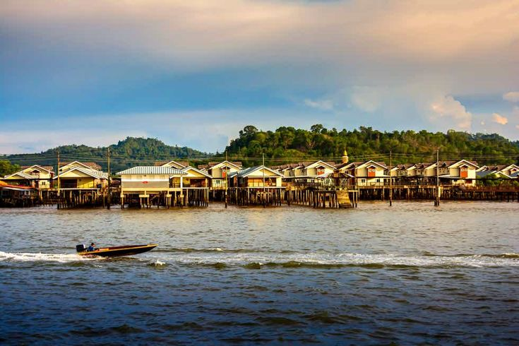
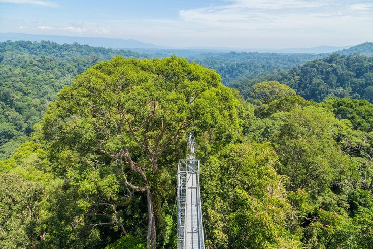

Discover A Small Country With Big Charm
Brunei Darussalam is a small, peaceful country on the north coast of Island of Borneo, in Southeast Asia. It is known for its calm atmosphere, its warm hospitality and its blend of Malay, Islamic and royal traditions.
Why visit?
- Beautiful Omar Ali Saifuddien Mosque, reflected in its lake.
- Ride a boat through Kampong Ayer, the famous water village.
- Explore the rainforest of Ulu Temburong National Park.
- Enjoy delicious local food and friendly people.
Highlights Slideshow



Watch: A Short Introduction
Tour Brunei Darussalam